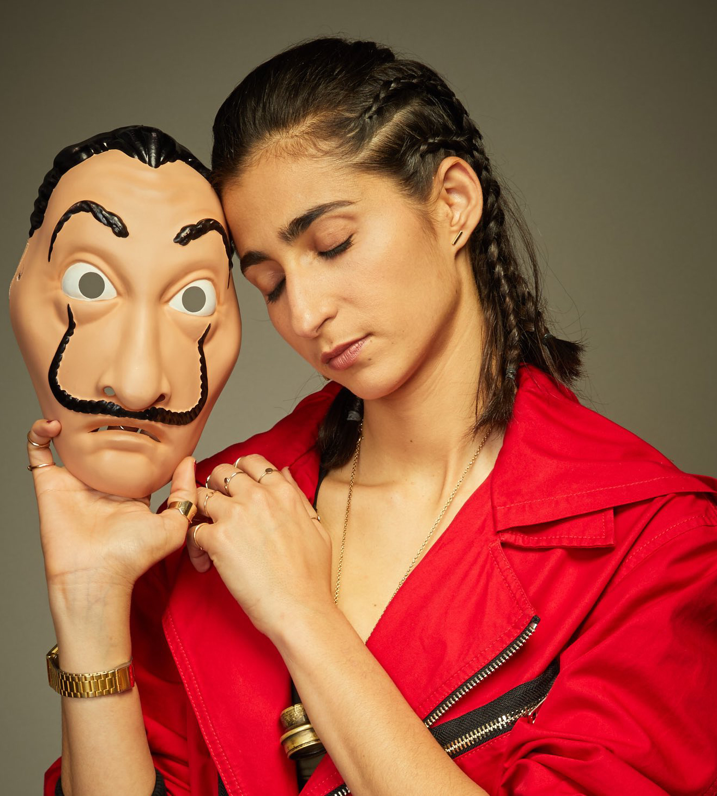

Najrobin lik osvojio je milione srca, posebno žena, zbog njene empatične, brižne i negujuće prirode. Ona je jedina osoba koja se neprestano trudi da održi grupnu harmoniju, ispuni potrebe i želje svih članova grupe. Ona prikazuje šarmantnu, pristupačnu, snažnu i vrednu ličnost. Ona istovremeno pokazuje majčinsku toplinu, radosnog prijatelja i snažnog pozitivnog šefa. Kada se suoči sa teškim situacijama, ona je smirena i koristi svoj provokativni govor tela da izazove drugu osobu. Ima neustrašiv obrazac ponašanja koji je vidljiv tokom njenih pojavljivanja u seriji. Sklona je radu koristeći svoje izražajne veštine komunikacije, samostalan stil rada zajedno sa planiranjem i preciznošću. Nairobi pripada grupi donosilaca odluka koji imaju motivacioni i fleksibilni stil donošenja odluka, tj. ona teži da donosi odluke iz srca, postaje emotivna, ali istovremeno se pokazuje i da je otvorena, prilagođavajući se različitim vrstama situacija. Nairobi ima vrlo visoku količinu samokontrole. Uvek naglašava održavanje grupne harmonije, jedva se odupire svojim željama i uvek se stara da sav njen posao bude tačno urađen. Najrobi nas sve uči „važnosti prijateljstva, majčinske prirode i načina održavanja grupe u vremenima krize“.
